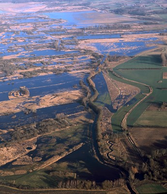

Christianshavn er en bydel i København. Geografisk set er Chr.havn en halvø på Amagers nordkyst.
Indtil år 1617 var Chr.havn kendt som det lavvandede og sumpede område.
Her efter påbegyndte C4 anlæggelse af en ny by. Det var først tænkt som et hjemsted for nederlandske immigranter,
dernæst som garnisons- eller bådsmandsby, men endte med at blive en almindelig købsmand- og håndværkerby.
I årene efter 1618 blev bydelen anlagt af den nederlandske ingeniør og arkitekt Johan Semp og forbundet med Kbh med Knippelsbro.
Grunde blev afstukket, og torv, kanal og gader blev anlagt og omgivet af grave og volde med bastioner - efter et nederlandsk forbillede.
I 1674 blev området indlemmet i Kbh som Christianshavns Kvarter, og i 1700-tallet blev bydelen udvidet med mange handelspladser og industrier,
som blomsterede i den såkaldte florissante handelsperiode.
Efter 1815 blev bydelens karakter af fattigkvarter tydligere og selvom B&Ws skibsværft og moderne masseproduktion kom til i 1800-tallet,
forblev bydelen et af hovedstadens fattigste kvarterer med udpræget slumbebyggelse.
Københavns kommune omfattende saneringsprogrammer fra 1920'erne truede med helt at udslette det gamle Christianshavn,
men bevaringsplaner har fra 1970'erne sikret den arrede bydels værdifulde bygningsmasse mod yderligere nedrivning.
Gennem 1990'erne fortsatte Christianshavn sin omdannelse fra industriområde og arbejderkvarter til attraktivt boligkvarter.
På trods at moderniseringen af Christianshavn, har bydelen bevaret en del af præget fra fortiden.
Det kan bl.a. ses i de mange traditionsrige værtshuse. Bydelen rummer også adskillige værdifulde bygningsværker fra 1600- og 1700-tallet,
hvoraf mange er fredet, f.eks. købmandsgårdene fra 1620'erne, Vor Frelsers Kirke fra 1682-96, Asiatisk Kompagni fra 1738 og Chr.kirke fra 1755-59
